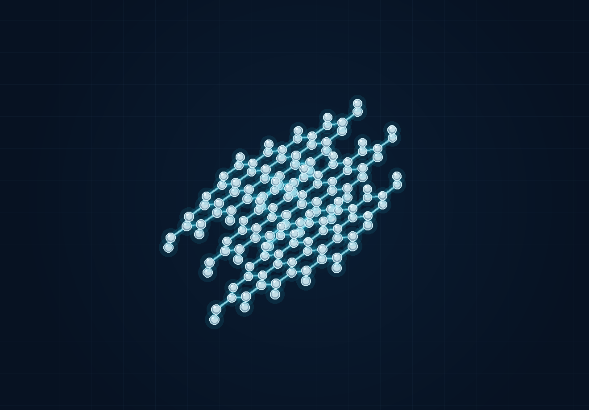
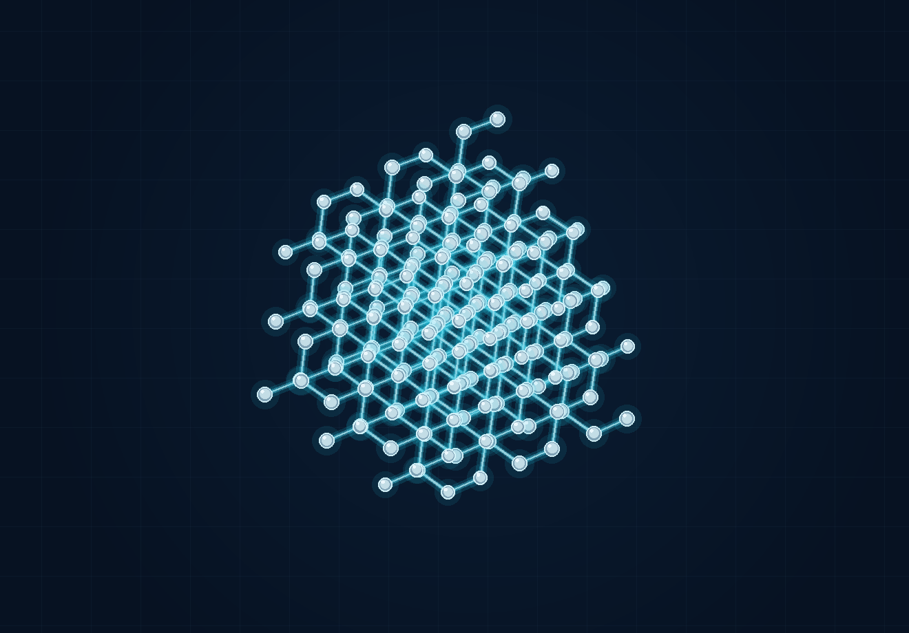
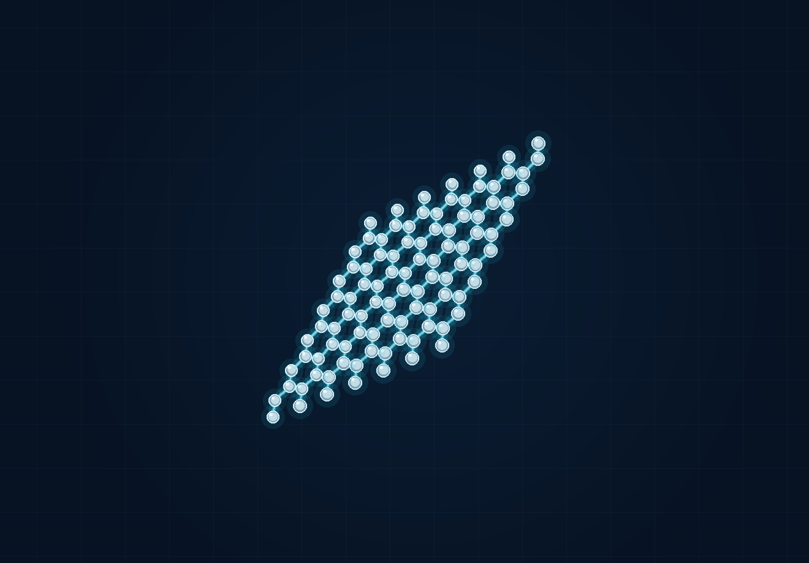
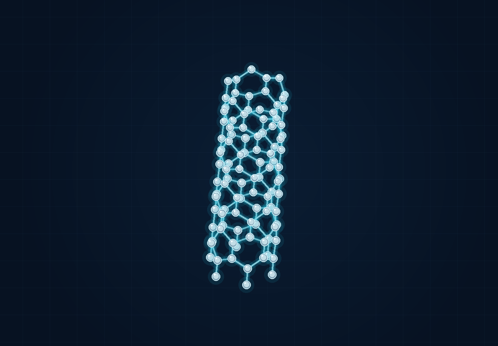

LABORATORIO VISIVO / CARBONIO
5 MODELLILe forme allotropiche del carbonio
Scegli una struttura per aprire il visualizzatore interattivo. Tutti i file sono locali e funzionano offline.

GrafiteApri visualizzatore 3D↗
DiamanteApri visualizzatore 3D↗
GrafeneApri visualizzatore 3D↗
Nanotubi di carbonioApri visualizzatore 3D↗ FullereniApri visualizzatore 3D↗
FullereniApri visualizzatore 3D↗Trascina per ruotare · rotella per zoom · legenda e indicatori integrati